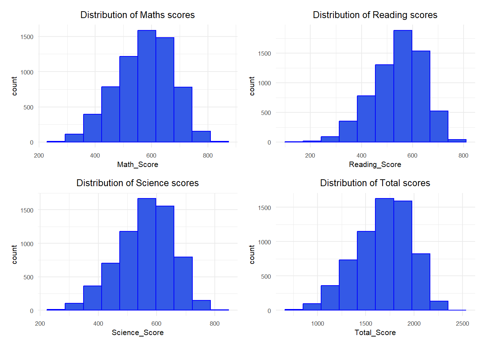
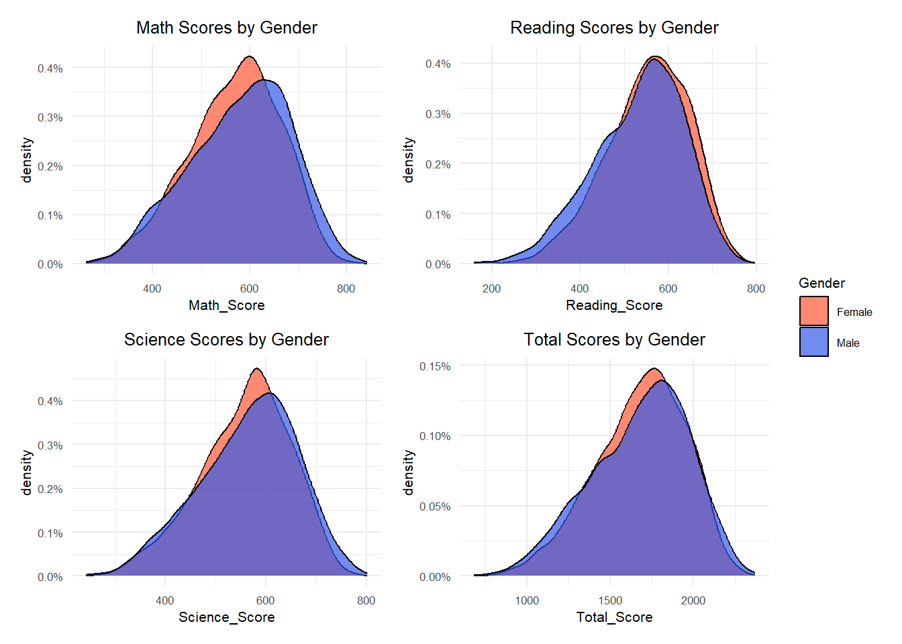
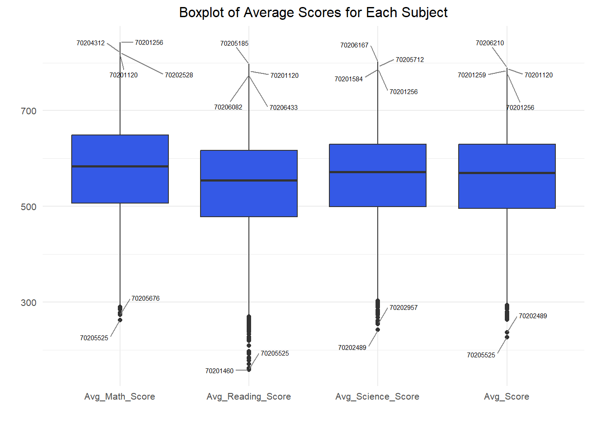
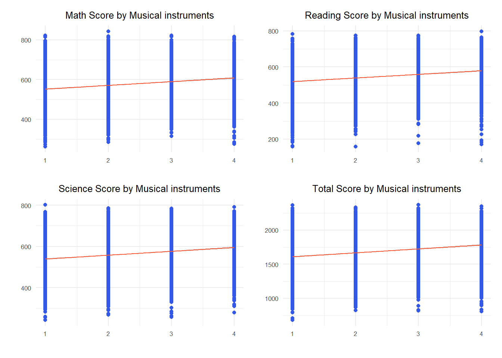
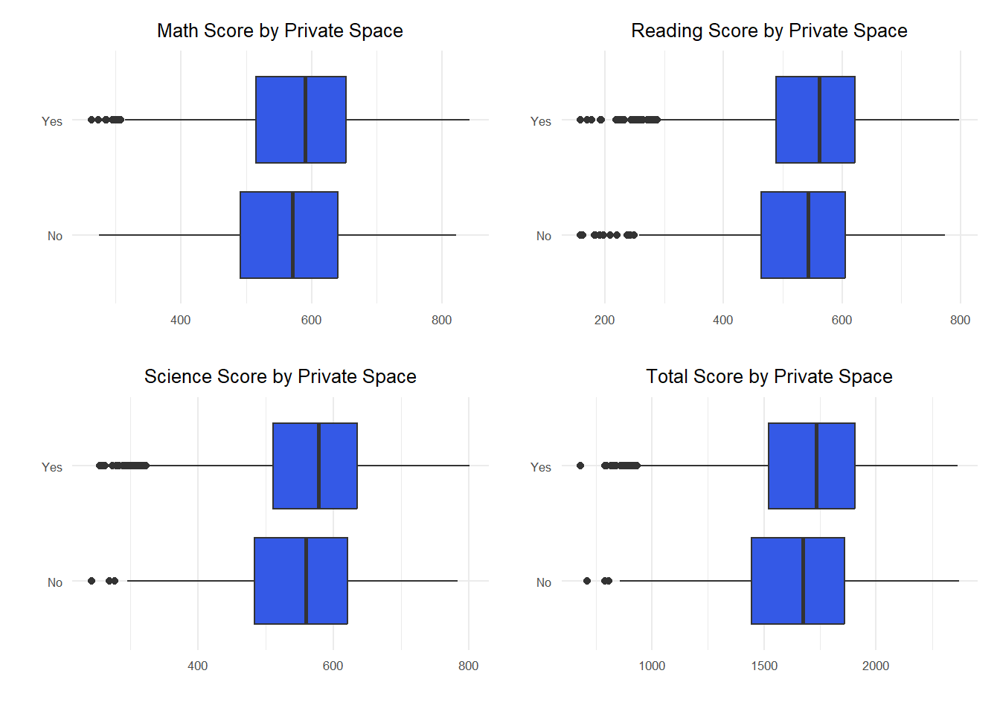

pacman::p_load(tidyverse,haven,dplyr,plotly,ggrepel, patchwork,
ggthemes, hrbrthemes)Take-home Exercise 1: Creating data visualisation beyond default
1 Background
OECD education director Andreas Schleicher shared in a BBC article that “Singapore managed to achieve excellence without wide differences between children from wealthy and disadvantaged families.” (2016) Furthermore, several Singapore’s Minister for Education also started an “every school a good school” slogan. The general public, however, strongly belief that there are still disparities that exist, especially between the elite schools and neighborhood school, between students from families with higher socioeconomic status and those with relatively lower socioeconomic status and immigration and non-immigration families.
2 Objective
In this exploratory data analysis (EDA) exercise, the primary objectives are to employ suitable methods and ggplot2 functions for the following:
Uncover the Distribution of Student Performance:
Explore and visualize the distribution of Singaporean students’ performance in mathematics, reading, and science. Utilize ggplot2 functions to create informative and insightful visualizations that highlight patterns and variations in student scores across these subjects.
Examine the Relationship Between Performance and School, Gender, and Socioeconomic Status:
Investigate and illustrate the connections between students’ academic performances in mathematics, reading, and science with respect to different factors such as schools, gender, and socioeconomic status (e.g. owning their own home, number of musical instruments). Leverage ggplot2 to create meaningful plots that facilitate a comprehensive understanding of these relationships.
3 Data Preparation
3.1 Loading R packages
In this hands-on exercise, two R packages will be used. They are:
tidyverse: An ecosystem of R packages, including dplyr, ggplot2, tidyr, and others, designed to work together seamlessly for data manipulation and visualization.
haven: A package for reading and writing data in various formats, including SAS, SPSS, and Stata.
dplyr: A powerful package for data manipulation, providing functions like filter(), select(), mutate(), and summarise().
plotly: A versatile package for creating interactive and dynamic plots, suitable for use in web applications.
ggrepel: An extension of ggplot2 that adds the ability to automatically adjust and repel text labels to avoid overlapping.
patchwork: A package for combining multiple ggplot2 plots into a single plot.
ggthemes: Additional themes and color scales for use with ggplot2, allowing customization of the appearance of plots.
hrbrthemes: A collection of themes and color palettes for use with ggplot2, created by Hadley Wickham.
The code chunk is as follows:
3.2 Importing PISA data
The code chunk below uses ‘read_sas()’ of haven to import PISA data into R environment.
stu_qqq <- haven::read_sas("data/cy08msp_stu_qqq.sas7bdat")For this exercise, we only need to analyse the Singapore region, and the following code is used to filter the students in Singapore.
stu_qqq_SG <- stu_qqq %>%
filter(CNT == "SGP")Next, we save the filtered data as a new data file to promote running efficiency.
write_rds(stu_qqq_SG,
"data/stu_qqq_SG.rds")stu_qqq_SG <-
read_rds("data/stu_qqq_SG.rds")The dataset has 1279 variables and 6606 observations. In preparation for visual analysis, the following code collates the relevant variables and integrates them into the PV dataset:
# Create a new dataset PV by extracting relevant variables from stu_qqq_SG
PV <- stu_qqq_SG %>%
mutate(
Math_Score = rowMeans(select(., starts_with("PV1MATH"), starts_with("PV2MATH"), starts_with("PV3MATH"), starts_with("PV4MATH"), starts_with("PV5MATH"), starts_with("PV6MATH"), starts_with("PV7MATH"), starts_with("PV8MATH"), starts_with("PV9MATH"), starts_with("PV10MATH")), na.rm = TRUE),
Reading_Score = rowMeans(select(., starts_with("PV1READ"), starts_with("PV2READ"), starts_with("PV3READ"), starts_with("PV4READ"), starts_with("PV5READ"), starts_with("PV6READ"), starts_with("PV7READ"), starts_with("PV8READ"), starts_with("PV9READ"), starts_with("PV10READ")), na.rm = TRUE),
Science_Score = rowMeans(select(., starts_with("PV1SCIE"), starts_with("PV2SCIE"), starts_with("PV3SCIE"), starts_with("PV4SCIE"), starts_with("PV5SCIE"), starts_with("PV6SCIE"), starts_with("PV7SCIE"), starts_with("PV8SCIE"), starts_with("PV9SCIE"), starts_with("PV10SCIE")), na.rm = TRUE),
Total_Score = Math_Score + Reading_Score + Science_Score,
Gender = ifelse(ST004D01T == 1, "Female", "Male"),
Own_Room = ifelse(ST250Q01JA == 1, "Yes" , "No"),
mi_num = ST251Q06JA
) %>%
select(CNTSCHID, CNTSTUID, Math_Score, Reading_Score, Science_Score, Total_Score, Gender, Own_Room, mi_num)In the following code we check the dataset using “str”:
str(PV)tibble [6,606 × 9] (S3: tbl_df/tbl/data.frame)
$ CNTSCHID : num [1:6606] 70200052 70200134 70200112 70200004 70200152 ...
..- attr(*, "label")= chr "Intl. School ID"
$ CNTSTUID : num [1:6606] 70200001 70200002 70200003 70200004 70200005 ...
..- attr(*, "label")= chr "Intl. Student ID"
$ Math_Score : num [1:6606] 605 690 677 401 436 ...
$ Reading_Score: num [1:6606] 667 628 583 361 476 ...
$ Science_Score: num [1:6606] 640 672 660 344 479 ...
$ Total_Score : num [1:6606] 1912 1990 1920 1106 1391 ...
$ Gender : chr [1:6606] "Female" "Male" "Male" "Male" ...
$ Own_Room : chr [1:6606] "No" "Yes" "Yes" "No" ...
$ mi_num : num [1:6606] 3 4 2 2 1 2 2 3 4 1 ...
..- attr(*, "label")= chr "How many of these items are there at your [home]: Musical instruments (e.g. guitar, piano, [country-specific example])"The following code converts school ID and student ID from numeric values to characters:
PV$CNTSCHID <- as.character(PV$CNTSCHID)
PV$CNTSCHID <- as.character(PV$CNTSTUID)In the last step, the following code is used to clear the missing values:
PV <- na.omit(PV)3.3 Variables Description
| Variables | Description |
|---|---|
| CNTSCHID | School ID, uniquely identifying each school |
| CNTSTUID | Student ID, uniquely identifying each student |
| Math_Score | Average math score computed from ten different tests for each student |
| Reading_Score | Average reading score computed from ten different tests for each student |
| Science_Score | Average science score computed from ten different tests for each student |
| Total_Score | Overall average score computed as the sum of math, reading, and science scores |
| Gender | Categorical variable indicating the gender of the student (either “Male” or “Female”) |
| Own_Room | Binary variable indicating whether the student has their own room (“Yes” or “No”) |
| mi_num | Numeric variable representing the number of musical instruments at the student’s home |
4 Exploratory Data Analysis
4.1 Distribution of Student Performance
The following code plots histograms of maths, reading, science, and total score scores to observe the distribution of student performance:
Code
plot1 <- ggplot(data = PV, aes(x = Math_Score)) +
geom_histogram(bins = 10, boundary = 100, color = "blue", fill = "#3459e6") +
ggtitle("Distribution of Maths scores")+
theme_minimal() +
theme(text = element_text(size = 8),
plot.title = element_text(hjust = 0.5))
plot2 <- ggplot(data = PV, aes(x = Reading_Score)) +
geom_histogram(bins = 10, boundary = 100, color = "blue", fill = "#3459e6") +
ggtitle("Distribution of Reading scores")+
theme_minimal() +
theme(text = element_text(size = 8),
plot.title = element_text(hjust = 0.5))
plot3 <- ggplot(data = PV, aes(x = Science_Score)) +
geom_histogram(bins = 10, boundary = 100, color = "blue", fill = "#3459e6") +
ggtitle("Distribution of Science scores")+
theme_minimal() +
theme(text = element_text(size = 8),
plot.title = element_text(hjust = 0.5))
plot4 <- ggplot(data = PV, aes(x = Total_Score)) +
geom_histogram(bins = 10, boundary = 100, color = "blue", fill = "#3459e6") +
ggtitle("Distribution of Total scores")+
theme_minimal() +
theme(text = element_text(size = 8),
plot.title = element_text(hjust = 0.5))
plot1 + plot2 + plot3 + plot4
Insights from Visualisations
The histograms of Math, Reading, Science, and Total scores reveal a right-skewed distribution indicating that the median surpasses the mean.
4.2 Student Performance by Gender
The following code generates density plots to compare the distribution of academic performance between students of different genders, providing a comprehensive understanding of the gender differences in academic achievement.
Code
plot1 <- ggplot(data = PV, aes(x = Math_Score, fill = Gender)) +
geom_density(alpha = 0.7, position = "identity", stat = "density") +
scale_fill_manual(values = c("Female" = "#FF5733", "Male" = "#3459e6")) +
labs(title = "Math Scores by Gender") +
theme(legend.position = "none") +
scale_y_continuous(labels = scales::percent) +
theme_minimal() +
theme(text = element_text(size = 8), plot.title = element_text(hjust = 0.5))
plot2 <- ggplot(data = PV, aes(x = Reading_Score, fill = Gender)) +
geom_density(alpha = 0.7, position = "identity", stat = "Density") +
scale_fill_manual(values = c("Female" = "#FF5733", "Male" = "#3459e6")) +
labs(title = "Reading Scores by Gender") +
theme(legend.position = "none") +
scale_y_continuous(labels = scales::percent)+
theme_minimal() +
theme(text = element_text(size = 8),
plot.title = element_text(hjust = 0.5))
plot3 <- ggplot(data = PV, aes(x = Science_Score, fill = Gender)) +
geom_density(alpha = 0.7, position = "identity", stat = "Density") +
scale_fill_manual(values = c("Female" = "#FF5733", "Male" = "#3459e6")) +
labs(title = "Science Scores by Gender") +
theme(legend.position = "none") +
scale_y_continuous(labels = scales::percent)+
theme_minimal() +
theme(text = element_text(size = 8),
plot.title = element_text(hjust = 0.5))
plot4 <- ggplot(data = PV, aes(x = Total_Score, fill = Gender)) +
geom_density(alpha = 0.7, position = "identity", stat = "density") +
scale_fill_manual(values = c("Female" = "#FF5733", "Male" = "#3459e6")) +
labs(title = "Total Scores by Gender") +
scale_y_continuous(labels = scales::percent)+
theme_minimal() +
theme(text = element_text(size = 8),
plot.title = element_text(hjust = 0.5))
combined_plots <- plot1 + plot2 + plot3 + plot4 +
plot_layout(guides = "collect")
combined_plots
Insights from Visualisations
Mathematics: The performance distribution in mathematics is similar for both males and females, but males have a slight edge in math scores.
Reading: Females have a slight advantage in reading scores compared to males, with males having a slightly lower distribution of scores.
Science: The distribution of science scores is similar for males and females, but males tend to have slightly higher scores.
Total Score: The overall performance distribution in total scores is similar for males and females, with no significant gender differences.
4.3 Student Performance by School
The following code calculates the maths, reading, and science, as well as the average grades in these three subjects for each school’s students, and synthesises a new dataset for graphing in the next step.
Code
School_Avg_Scores <- PV %>%
group_by(CNTSCHID) %>%
summarize(
Avg_Math_Score = mean(Math_Score, na.rm = TRUE),
Avg_Reading_Score = mean(Reading_Score, na.rm = TRUE),
Avg_Science_Score = mean(Science_Score, na.rm = TRUE),
Avg_Score = mean(Total_Score/3, na.rm = TRUE)
)
School_Avg_Scores_subjects <- School_Avg_Scores %>%
select(CNTSCHID, starts_with("Avg_Math"), starts_with("Avg_Reading"), starts_with("Avg_Science"),starts_with("Avg_Score"))
School_Avg_Scores_long <- School_Avg_Scores_subjects %>%
pivot_longer(cols = -CNTSCHID, names_to = "Subject", values_to = "Score")The following code draws box plots showing the distribution of school average scores in each subject, with text labels identifying the four highest-scoring schools and the two lowest-scoring schools in each subject.
Code
outliers_data <- School_Avg_Scores %>%
pivot_longer(cols = starts_with("Avg_"), names_to = "Subject", values_to = "Score") %>%
group_by(Subject) %>%
arrange(Score) %>%
slice(c(1:2, (n() - 3):(n())))
ggplot(School_Avg_Scores_long, aes(x = Subject, y = Score, fill = Subject)) +
geom_boxplot(fill = "#3459e6") +
geom_text_repel(data = outliers_data, aes(label = CNTSCHID),
position = position_dodge(width = 1),
box.padding = 0.8,
force = 1,
segment.color = "grey50",
size = 2) + # Use ggrepel's geom_text_repel
labs(title = "Boxplot of Average Scores for Each Subject", x = "", y = "") +
theme_minimal() +
theme(text = element_text(size = 10),
plot.title = element_text(hjust = 0.5))
Insights from Visualisations
The variation in subject and average scores across schools is very wide, with the top performing schools able to have an average score of about 800 per subject. However, schools at the bottom end of the scale have less than 300, and even less than 200 in reading.
Students from two schools, 70201256 and 70201120, had top average performance in two of the three subjects and top average scores per subject.
Students from two schools, 70205525 and 70202489, performed poorly.
Some schools had students who were at the top in individual subjects but did not rank very high in the overall rankings, suggesting that these schools were better educated in certain individual subjects, e.g., 70205185 in reading.
4.4 Student Performance by Musical Instruments
The following code shows scatter plots of students’ maths, reading, science and overall performance against the number of musical instruments owned, as well as showing the relationship by fitting a line through linear regression.
Code
plot_math <- ggplot(data=PV, aes(x=mi_num, y=Math_Score)) +
geom_point(color="#3459e6") +
geom_smooth(method=lm, size=0.5,color = "#FF5733") +
labs(title ="Math Score by Musical instruments", x = "", y = "")+
theme_minimal() +
theme(text = element_text(size = 8),
plot.title = element_text(hjust = 0.5))
plot_reading <- ggplot(data=PV, aes(x=mi_num, y=Reading_Score)) +
geom_point(color="#3459e6") +
geom_smooth(method=lm, size=0.5,color = "#FF5733") +
labs(title ="Reading Score by Musical instruments", x = "", y = "")+
theme_minimal() +
theme(text = element_text(size = 8),
plot.title = element_text(hjust = 0.5))
plot_science <- ggplot(data=PV, aes(x=mi_num, y=Science_Score)) +
geom_point(color="#3459e6") +
geom_smooth(method=lm, size=0.5,color = "#FF5733") +
labs(title ="Science Score by Musical instruments", x = "", y = "")+
theme_minimal() +
theme(text = element_text(size = 8),
plot.title = element_text(hjust = 0.5))
plot_total <- ggplot(data=PV, aes(x=mi_num, y=Total_Score)) +
geom_point(color="#3459e6") +
geom_smooth(method=lm, size=0.5,color = "#FF5733") +
labs(title ="Total Score by Musical instruments", x = "", y = "")+
theme_minimal() +
theme(text = element_text(size = 8),
plot.title = element_text(hjust = 0.5))
combined_plot <- plot_math + plot_reading + plot_science + plot_total
combined_plot
Insights from Visualisations
As can be seen by the graph, the linear regression fit line is slightly upward, suggesting that students with more musical equipment in this dataset are likely to trend better in maths, reading, science, and overall performance in general.
4.5 Student Performance by Own room
The following code plots box-and-line graphs to compare student performance in maths, reading, science and overall scores by whether or not they had the room to themselves.
Code
p1 <- ggplot(data = PV, aes(x =Math_Score , y = Own_Room)) +
geom_boxplot(fill = "#3459e6") +
labs(title ="Math Score by Private Space",x = "", y = "")+
theme_minimal() +
theme(text = element_text(size = 8),
plot.title = element_text(hjust = 0.5))
p2 <- ggplot(data = PV, aes(x =Reading_Score , y = Own_Room)) +
geom_boxplot( fill = "#3459e6") +
labs(title ="Reading Score by Private Space", x = "", y = "")+
theme_minimal() +
theme(text = element_text(size = 8),
plot.title = element_text(hjust = 0.5))
p3 <- ggplot(data = PV, aes(x = Science_Score , y = Own_Room)) +
geom_boxplot( fill = "#3459e6") +
labs(title ="Science Score by Private Space", x = "", y = "")+
theme_minimal() +
theme(text = element_text(size = 8),
plot.title = element_text(hjust = 0.5))
p4 <- ggplot(data = PV, aes(x = Total_Score , y = Own_Room)) +
geom_boxplot( fill = "#3459e6") +
labs(title ="Total Score by Private Space", x = "", y = "")+
theme_minimal() +
theme(text = element_text(size = 8),
plot.title = element_text(hjust = 0.5))
combined_plot<- p1 + p2 + p3 + p4
combined_plot
Insights from Visualisations
From the box plot above, it is clear that students with their own rooms generally outperform students without their own rooms in maths, reading, science, and overall scores. This may be because a quiet, distraction-free environment helps students focus better on their studies, which in turn improves their academic performance.
5 Conclusion
The visualizations showed right-skewed score distributions, indicating median scores surpassing the mean. Gender differences were observed, with males slightly excelling in mathematics, while females performed better in reading. School-level analysis showcased a wide performance variation, with some excelling in specific subjects. Socioeconomic factors like musical instruments and private spaces influenced scores positively. Students with more instruments tended to perform better, and those with private rooms consistently outperformed peers without.
6 Limitations
However, it is essential to acknowledge certain limitations in our analysis. The exploration primarily relied on visualizations and graphical representations to uncover patterns and insights. While these visualizations offer a comprehensive overview of the data, they lack the precision and depth that statistical analysis methods could provide.The absence of rigorous statistical tests, such as hypothesis testing or regression analyses, limits our ability to make definitive causal inferences or uncover more nuanced relationships between variables.